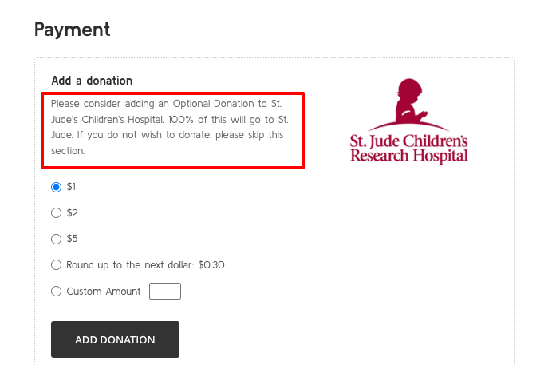

Other Custom Features
This section contains information about other custom features that are not part of the standard theme setup or pages.
Site messages
Some pages have custom messages that are displayed to the user. These messages can be edited in the BigCommerce control panel under Storefront > Script Manager > Site Messages. The donation_text is the text that shows on the checkout for the donation area. 
The checkout_login_text is the text that shows on the top of the checkout and login pages (they share the same message).
Checkout/Login Messages and Donation system toggle
To toggle the Checkout and Login Messages or the entire Donation system on or off, you need to change a Theme Setting in the Page Builder.
To access the Theme Settings, please follow the instructions here.
Then, while on the Design tab, click on the palette on the left, then on 'Optimized Checkout'. You will find the two checkboxes to toggle on/off.
Quick Order Form
The Quick Order Form is a custom feature that allows users to quickly add products to their cart from one single page.
To create a new Quick Order Form, simple create a new simple product in BigCommerce. The product should not have any options or variants.
To assign products to a Quick Order Form, you need to add the custom field 'group_products'. The value should be the ids of the products, separated by a comma.
Please note that the custom field value has a limit of characters, so you may need to split the products into multiple custom fields if you have a lot of products. You need to use the same custom field name 'group_products' in all of them. Don't need to add a comma in the last number of each custom field value.
To get a product ID, go to the Products tab, look for the product you want to add and hover over it. You will see at the bottom, a number in the url. That's the ID of the product.